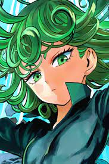
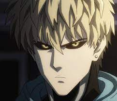
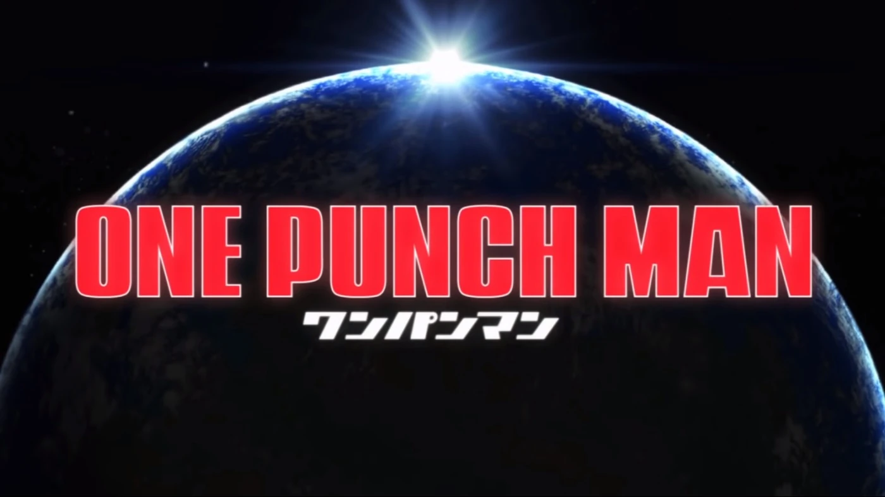

About Me
Favorite Cartoon Character

Saitama
Side Characters
The best supporting characters on One Punch Man


One Punch Man

One-Punch Man is a Japanese Shonen anime based an overpowered character who defeats all his foes with a single punch. The main character of the show is a regular man who is really weak at the beginning of the series, but after realizing that his weakness will lead to his downfall. He starts his body to the limit. Fastforwarda few years where he becomes a superhero after testing his powers he soon realizes that his traingn made him the most overpowered charcter in the world and he beats any foe in his way with a single page